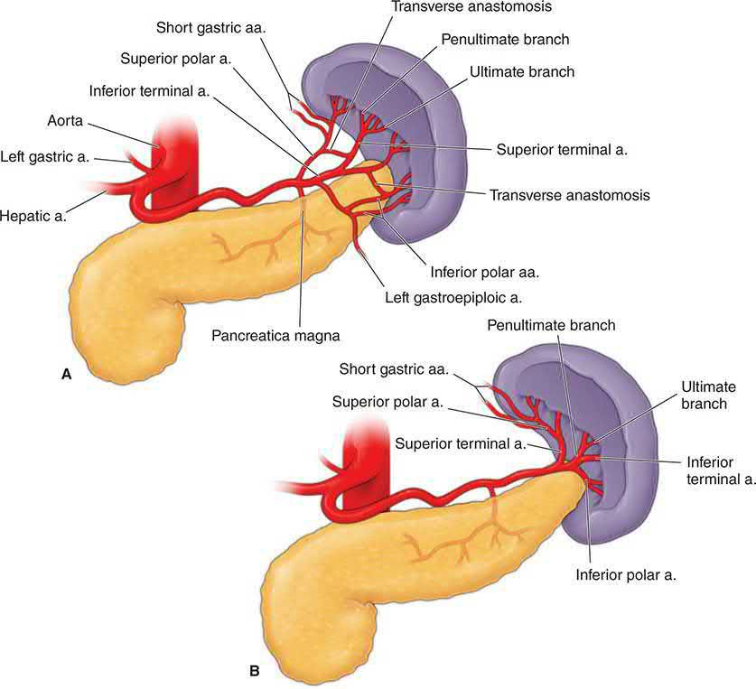
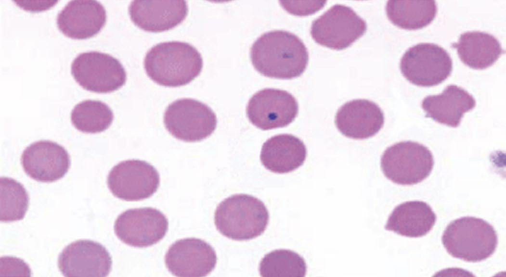
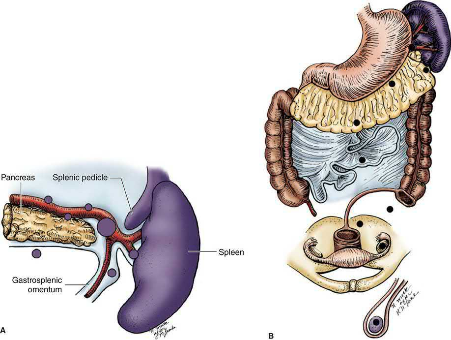
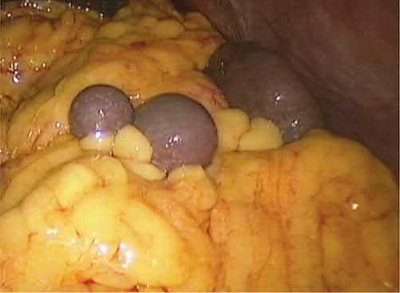
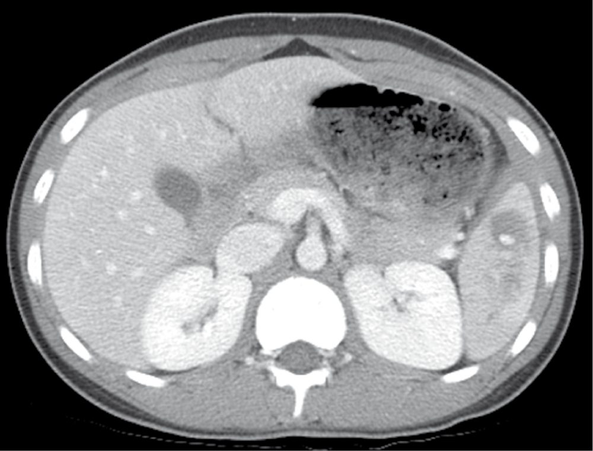
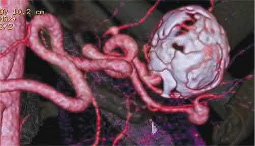
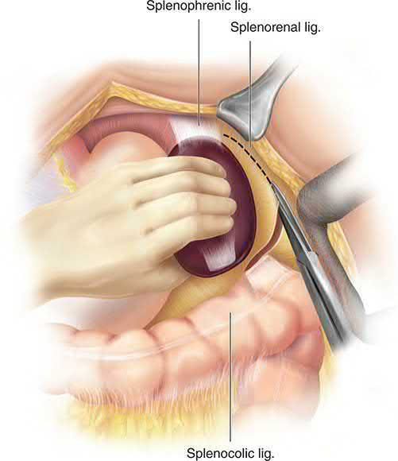
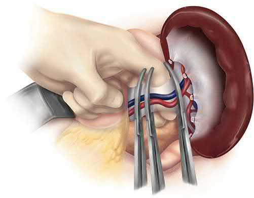

Spleen and Splenectomy
Summary
- The spleen is the largest lymphatic organ in the body, measuring 7 to 13 cm in length and weighing up to 250 g [1].
- It was once thought dispensable, but incidental splenectomy during another operation is now known to increase the risk of complications and death, so the surgeon should normally try to preserve it [2].
- Splenectomy is undertaken for four broad reasons, trauma, en bloc resection with an adjacent cancer, haematological disease, and portal hypertension surgery [2].
- Immune thrombocytopenia is the most common haematological indication [1].
- The dominant long-term hazard after removal is overwhelming post-splenectomy infection, which vaccination and education are directed at preventing [1].
Definition
- The spleen sits in the left upper quadrant, enclosed in a fibroelastic capsule from which trabeculae extend to compartmentalise it into lobules, and it is further segmented by the divisions of the splenic vessels as they branch within the organ [1].
- Its arterial supply is the splenic artery, which divides into terminal branches within the organ, together with six short gastric arteries; the splenic vein runs posterior to the pancreas and joins the superior mesenteric vein to form the portal vein [1].
- Two patterns of splenic arterial anatomy are described: the magistral type in about 30% of individuals and the more common distributed type in about 70% [1].
Splenomegaly is enlargement of the spleen, and the organ must enlarge roughly threefold before it becomes palpable [2]. Hypersplenism is the combination of splenomegaly with anaemia, leucopenia and/or thrombocytopenia in the presence of bone marrow hyperplasia [3]. Asplenia may be surgical or functional, the latter arising when repeated infarction destroys splenic tissue, as in sickle cell disease [2].

Pathophysiology
Functions of the spleen
Five functions are conventionally described [2].
- Immune function.
- The spleen contains 70.5% and 10–15% of the body's total T and B lymphocyte population respectively, processes foreign antigens, and is the major site of specific immunoglobulin M production; it also synthesises the non-specific opsonins properdin and tuftsin, which bind receptors on macrophages and leucocytes and stimulate their phagocytic, bactericidal and tumoricidal activity [2].
- Properdin, also known as factor P, initiates the alternate pathway of complement activation, while tuftsin is a tetrapeptide that enhances phagocytic activity; both fall to subnormal levels after splenectomy [1].
- Loss of this function is what necessitates vaccination against capsulated organisms [2].
- Filtration.
- Macrophages in the reticulum capture cellular and non-cellular material from blood and plasma, including effete platelets and red cells, with iron recovered from degraded haemoglobin and returned to plasma [2].
- Red cells must elongate and thin to pass from the splenic cords into the sinuses, a process that removes abnormally shaped cells from the circulation [2].
- Aged red cells with reduced plasticity, beyond about 120 days, become trapped and destroyed [1].
- Pitting.
- Particulate inclusions are removed from red cells, which are then returned intact to the circulation [2].
- Loss of this function explains the appearance of Howell–Jolly bodies (nuclear remnants), Heinz bodies (denatured haemoglobin), Pappenheimer bodies (iron granules) and acanthocytes in the asplenic patient, and Howell–Jolly bodies on a peripheral smear are among the most characteristic findings in asplenia, whether surgical or medical [1][2].
- Reservoir.
- The spleen normally pools about one-third of the circulating platelets, so a patient with splenomegaly may sequester up to 80% of the platelet mass with resulting thrombocytopenia [1].
- It also contains approximately 8% of the red cell mass, and massive enlargement holds a correspondingly larger share of blood volume, producing a pancytopenia that splenectomy can correct [2].
- Cytopoiesis.
- Between 3 and 5 weeks of fetal life the spleen is a key producer of white and red cells, but the marrow takes over from the fifth month of gestation and the spleen has no significant haematopoietic role thereafter under normal conditions [1].
- Extramedullary erythropoiesis returns in pathological states such as myelodysplastic syndrome, and stimulation of the white pulp after antigenic challenge drives proliferation of T cells, B cells and macrophages in myeloproliferative disorders, thalassaemias and chronic haemolytic anaemias [1][2].

Circulation
About 90% of blood passing through the spleen takes an open circulation from arteries to cords and thence to sinuses, so splenic pulp pressure reflects pressure throughout the portal system; the remaining 10% bypasses the cords and sinuses through direct arteriovenous communications [2]. Total flow is about 300 mL/min [2].
Clinical features
Splenomegaly may be found on examination or suspected from the underlying disease, but many splenic conditions (immune thrombocytopenia among them) enlarge the organ without making it palpable [2].
- Immune thrombocytopenia (ITP) has a heterogeneous presentation.
- Bleeding may be minor, with bruising and petechiae, or severe, including life-threatening gastrointestinal or intracerebral haemorrhage [1].
- It occurs more commonly in females with a bimodal age distribution peaking between 1 and 5 years and again above 60 years [1].
- In children the presentation is distinctive, sudden-onset severe thrombocytopenia, with complete spontaneous remission in approximately 80% [1].
Hereditary spherocytosis presents with moderate haemolytic anaemia, jaundice, folate deficiency and splenomegaly [1].
Acute splenic sequestration crisis is a life-threatening event in children with sickle cell disease or sickle β-thalassaemia, in which vaso-occlusion and splenic red cell sequestration produce a rapid fall in haemoglobin and hypovolaemic shock; the child presents with severe anaemia, abdominal pain, splenomegaly and reticulocytosis [1].
Splenic abscess presents with non-specific symptoms (vague abdominal pain, fever, peritonitis and pleuritic chest pain) and splenomegaly is not typical [1]. In sickle cell disease the picture is of fever, abdominal pain and a tender enlarged spleen, usually with leucocytosis, thrombocytosis and Howell–Jolly bodies indicating functional asplenia [1].
Wandering spleen is rare, seen in children and in women between 20 and 40 years, and arises when the splenic ligaments are lax and the pedicle unusually long, leaving it prone to torsion; intermittent abdominal pain, splenomegaly from venous congestion and a mobile palpable mass are suggestive [1].
Splenic infarction may be asymptomatic or cause left upper quadrant and left shoulder tip pain [2].
Splenic artery aneurysm is symptomless unless it ruptures; it is unlikely to be palpable, although a bruit may be present, and rupture into the peritoneal cavity mimics splenic rupture [2].
Etiology
The causes of splenic enlargement are conventionally grouped as infective (bacterial, spirochaetal, viral, protozoal and parasitic), haematological, metabolic, circulatory, collagen disease, non-parasitic cysts and neoplastic [2]. Infective causes include typhoid, tuberculosis, septicaemia, infectious mononucleosis, malaria, schistosomiasis and kala-azar; haematological causes include the leukaemias, ITP, hereditary spherocytosis, autoimmune haemolytic anaemia, polycythaemia vera, thalassaemia and sickle cell disease; circulatory causes include infarct and portal hypertension [2].
Segmental or sinistral portal hypertension results from isolated occlusion of the splenic vein by thrombosis, pancreatic inflammation or tumour infiltration [2]. Non-cirrhotic portal fibrosis, common in tropical countries, produces massive splenomegaly and pancytopenia without stigmata of liver dysfunction [2].
Felty syndrome is the triad of rheumatoid arthritis, splenomegaly and neutropenia, present in approximately 3% of patients with rheumatoid arthritis, two-thirds of whom are women; immune complexes coat white cells, leading to their sequestration and clearance in the spleen [5].
Metastatic disease. Lung carcinoma is the tumour that most commonly spreads to the spleen, although colorectal and ovarian cancer and melanoma also metastasise there [5].
Congenital abnormalities
- Splenic agenesis is rare but is present in 5% of children with congenital heart disease, and polysplenia results from failure of splenic fusion [2]. Splenunculi, or accessory spleens, are the most common anomaly of splenic embryology and are found in approximately 10–30% of the population, lying near the splenic hilum in 50% of cases and behind the tail of the pancreas in 30%, with the remainder in the mesocolon, greater omentum or splenic ligaments [2].
- Over 80% are found in the region of the splenic hilum and vascular pedicle, and one or more may be present in up to 30% of patients with haematological disease; Gerota fascia is not among the recognised sites [5].
- Failure to identify and remove them at operation may give rise to persistent disease [2].


Diagnosis
Conditions producing splenomegaly are usually identified from the history, examination and laboratory tests: a full blood count, reticulocyte count and tests for haemolysis will establish the cause of a haemolytic anaemia, while portal hypertension is suggested by stigmata of liver disease, abnormal liver function, cytopenias and endoscopic evidence of oesophageal varices [2]. Because many causes of splenomegaly also produce lymphadenopathy, investigation should be directed at conditions associated with both, and lymph node biopsy may be required [2].
Imaging
- Plain radiology is rarely used, though incidental calcification of the spleen or splenic artery may suggest an aneurysm, an old infarct, a benign cyst or hydatid disease, and multiple areas of calcification may indicate splenic tuberculosis [2].
- Ultrasonography determines splenic size and consistency and the presence of a cyst, but contrast-enhanced CT is more commonly used to characterise splenic pathology and exclude other intra-abdominal disease; MRI is similarly useful, and T2-weighted images distinguish cystic lesions [2].
- CT or MRI also serves operative planning, determining splenic size and volume, identifying accessory spleens and demonstrating varices [1].
- Contrast-enhanced CT shows the characteristic perfusion defect of splenic infarction [2], and CT is the preferred method of diagnosing splenic abscess [1].
Haematological diagnosis
The diagnosis of primary ITP is one of exclusion, requiring a platelet count below 100 × 10⁹/L with normal bone marrow and no other cause, and the differential includes pregnancy, drug-induced thrombocytopenia, viral infection and hypersplenism [1]. Mild thrombocytopenia occurs in approximately 6% to 8% of otherwise normal pregnancies and in up to 25% of women with pre-eclampsia [1]. Helicobacter pylori has been linked to infection-related thrombocytopenia that improves with eradication [1].
Hereditary spherocytosis is diagnosed on a peripheral smear showing spherocytes together with elevated lactate dehydrogenase, raised indirect bilirubin, increased osmotic fragility and a negative Coombs test [1]. A positive direct Coombs test is what confirms autoimmune haemolytic anaemia and distinguishes it from other forms of haemolytic anaemia [5].
Scoring and Severity
Splenic injury is graded I to V on CT, which is the most important investigation in the haemodynamically stable trauma patient [2].
| Grade | Criteria |
|---|---|
| I | Subcapsular haematoma <10% of surface area; parenchymal laceration <1 cm depth; capsular tear |
| II | Subcapsular haematoma 10–50% of surface area, or intraparenchymal haematoma <5 cm; parenchymal laceration 1–3 cm |
| III | Subcapsular haematoma >50% of surface area, or ruptured subcapsular/intraparenchymal haematoma ≥5 cm; parenchymal laceration >3 cm depth |
| IV | Any injury with splenic vascular injury or active bleeding confined within the capsule; laceration involving segmental or hilar vessels producing >25% devascularisation |
| V | Any injury with splenic vascular injury and active bleeding extending beyond the spleen into the peritoneum; shattered spleen |
- Table reformats the CT grading criteria [2].
- Vascular injury here means a pseudoaneurysm or arteriovenous fistula, appearing as a focal collection of vascular contrast that decreases in attenuation on delayed imaging [2].
- The higher the injury grade, the more likely an intervention will be required, grade V representing a completely shattered spleen or complete hilar disruption devascularising the organ [6].
ITP is staged by chronicity: newly diagnosed within 3 months, persistent from 3 to 12 months, and chronic beyond 12 months [1].

Treatment and Management
Immune thrombocytopenia
- Asymptomatic low-risk patients with platelet counts above 30,000/mm³ may simply be observed, and counts of 50,000/mm³ and above are rarely associated with clinical sequelae even with invasive procedures [1].
- Initial treatment for counts below 30,000/mm³ with mucous membrane bleeding or high-risk features, or below 20,000 to 30,000/mm³ even without symptoms, is a glucocorticoid, prednisone 0.5–2 mg/kg/day or dexamethasone 50 mg/day for 4 days [1].
- Platelet counts rise above 50,000/mm³ in up to two-thirds of patients within 1 to 3 weeks, and 25% achieve a complete response [1].
- Platelet transfusion is indicated only for severe haemorrhage [1].
Intravenous immunoglobulin is used for acute bleeding, in pregnancy, and to prepare a patient for operation including splenectomy, usually raising the platelet count within 3 days [1]. Given at 1.0 g/kg per day for 2 to 3 days, it is the appropriate preoperative intervention when counts remain below 5000/mm³ or extensive purpura exists, and is thought to work by impairing clearance of immunoglobulin G-coated platelets through competition for tissue macrophage receptors; the response is immediate but rarely sustained [5].
- Second-line options in corticosteroid-dependent or unresponsive adults are rituximab 375 mg/m² weekly intravenously for 4 weeks, thrombopoietin receptor agonists such as eltrombopag or romiplostim, or splenectomy, and there are no clear guidelines on which to prefer [1].
- A 2019 meta-analysis put aggregate response rates at 1 month at 86.7% for splenectomy, 65.7% for thrombopoietin receptor agonists and 62.1% for rituximab [1].
- For disease of less than a year spontaneous remission remains possible and medical therapy is preferred, but beyond a year in the steroid-dependent or unresponsive patient splenectomy should be considered [1].
- In children splenic preservation is preferred and medical therapy recommended where feasible, given high rates of spontaneous remission [1].
Haemolytic anaemias
The decision to operate must be individualised, balancing benefit against the risks of overwhelming post-splenectomy infection, arterial and venous thromboembolism, and pulmonary arterial hypertension [1]. In hereditary spherocytosis, splenectomy is indicated in severe disease with haemoglobin below 8 g/dL, and in moderate disease with haemoglobin 8 to 12 g/dL depending on spleen size and quality-of-life measures; it should be delayed until the age of 6 years to preserve immunological function and reduce the risk of overwhelming infection [1].
- Splenectomy is indicated in severe pyruvate kinase deficiency, particularly with high transfusion requirements, and an international registry found it reduced transfusion in 91% of cases, although transfusion dependency and moderate anaemia persisted in more than half [1].
- In glucose-6-phosphate dehydrogenase deficiency it is considered for symptomatic splenomegaly or transfusion dependence [1].
- Of the haemolytic anaemias, warm-antibody autoimmune haemolytic anaemia is the one most likely to benefit, though transient responses are common and many patients eventually relapse [5].
Treatment of acute splenic sequestration is resuscitation followed by consideration of splenectomy, particularly after two episodes, given the high recurrence rate and associated mortality [1].
Splenic trauma
- Vigorous resuscitation remains the key to management of blunt trauma [2].
- Non-operative management applies only to stable patients, and the threshold for splenectomy in children is high [6].
- An unstable patient with a blunt splenic injury, defined as a systolic pressure below 90 mmHg despite 2 L of crystalloid, goes to theatre for splenectomy [6].
- A patient who becomes unstable or is a transient responder despite aggressive resuscitation including two or more units of packed cells, or who needs two or more units to keep the haematocrit above 25, goes to theatre if unstable or to angioembolisation if a transient responder [6].
- Active contrast extravasation, a pseudoaneurysm or an arteriovenous fistula on CT in a stable or transient-responder patient is an indication for angioembolisation [6].
- Non-operative management requires bed rest for 5 days, and the spleen is fully healed after 6 weeks [6].
- Splenic angiography with embolisation of actively bleeding vessels may obviate splenectomy but should never delay laparotomy in the haemodynamically unstable patient [2].
Other splenic lesions
Splenic infarction is treated conservatively, and splenectomy considered only when a septic infarct causes an abscess [2]. Unilocular splenic abscesses are often amenable to percutaneous drainage with antibiotics and high success rates, whereas multilocular lesions are usually treated by splenectomy with drainage of the left upper quadrant and antibiotics [1].
Splenectomy or partial splenectomy is usually considered for cysts larger than 5 cm in diameter [2]. For parasitic cysts splenectomy is the treatment of choice, and hydatid disease must be excluded before any procedure that risks spillage, since rupture and expulsion of contents into the abdomen may precipitate anaphylactic shock and intraperitoneal infection [1].
For splenic artery aneurysm the historical treatment was splenectomy with removal of the diseased artery, but embolisation or endovascular stenting after selective angiography is now more commonly undertaken; intervention is indicated in younger patients with an asymptomatic aneurysm, while in elderly patients with a calcified aneurysm the rupture risk is lower and observation may be preferred [2].

Surgeries
Preoperative preparation
- Where there is a bleeding tendency, transfusion of blood, fresh frozen plasma, cryoprecipitate or platelets may be required, coagulation profiles should be as near normal as possible at operation, and platelets should be available during and early after surgery in the thrombocytopenic patient [2].
- In ITP, platelets are generally withheld until the splenic vessels have been controlled [2].
- Antibiotic prophylaxis appropriate to the procedure is given, and the risk of post-splenectomy sepsis considered [2].
- Careful evaluation for splenules should be undertaken using both preoperative imaging and a systematic operative approach [1].
Open splenectomy
- Most surgeons use a midline or transverse left subcostal incision with the patient supine, a thoracoabdominal incision being needed only rarely for a massive spleen adherent to the diaphragm [2].
- A nasogastric tube passed after induction empties the stomach [2].
- In elective splenectomy the gastrosplenic ligament is opened and the short gastric vessels divided, and the splenic vessels at the superior border of the pancreas are suture ligated [2].
- Division of the posterior leaf of the lienorenal ligament allows the spleen to be rotated and delivered medially into the wound along with the tail and body of the pancreas, which is then separated from the hilar vessels; these are normally doubly ligated separately and divided [2].
- Accessory splenic tissue in the hilum or omentum should be excluded by careful search, and there is no need to drain the wound [2].
In significant splenomegaly, ligating the splenic artery in continuity along the superior border of the pancreas is preferable and is done first: it allows safer manipulation of the spleen and dissection of the hilum, produces some shrinkage, and autotransfuses erythrocytes and platelets [5]. Medial mobilisation follows by incising the lateral peritoneal attachments, most notably the splenophrenic ligament, then individually ligating and sequentially dividing the short gastric vessels; at the hilum the splenic artery and vein should where possible be dissected and individually ligated, in that order, before division [5].
The segmental vasculature of the spleen makes limited parenchymal resection possible, with haemostasis achieved by ligation or metal clips on intrasplenic vessels and careful use of topical haemostatic agents, so conservative splenic surgery is feasible in some cases of trauma and in splenic cysts [2].


Laparoscopic splenectomy
- A minimally invasive approach is the preferred method of resecting the spleen, first described in 1991 [1].
- It is rapidly becoming the mainstay of treatment in ITP, where the spleen is usually normal or only slightly enlarged and is not friable [2].
- The patient is placed on the right side with the space between the left ilium and costal margin exposed, the splenocolic ligament divided to reach the lower pole, the spleen separated from kidney and diaphragm, and the hilum secured and divided with an endoscopic vascular stapler, often requiring two or three applications; the specimen is removed in a retrieval bag [2].
- Potential disadvantages are longer operating times and greater difficulty with large spleens, but reduced length of stay and decreased morbidity and mortality more than justify these [1].
- The reported conversion rate is between 0% and 20%, with conversion associated with intraoperative haemorrhage, lack of surgical experience, significant adhesions, massive splenomegaly and obesity, and declining with experience [1].
- Newer data report oncological outcomes similar to open surgery with shorter stay and lower morbidity and 30-day mortality [1].
- Open splenectomy remains the standard of care in blunt trauma when non-operative or embolisation management fails or the patient is unstable at presentation [1].
Complications
Early complications
- Immediate complications specific to splenectomy include haemorrhage from a slipped ligature [2].
- Left basal atelectasis is common and a pleural effusion may be present [2].
- The stomach and pancreas are at risk: a fistula may follow damage to the greater curvature during ligation of the short gastric vessels, and injury to the tail of the pancreas during hilar ligation may cause pancreatitis, a localised abscess or a pancreatic fistula [2].
- Haematemesis from gastric mucosal damage and gastric dilatation are uncommon [2].
Postoperative thrombocytosis may arise, and where the platelet count exceeds 1 × 10⁶/mL prophylactic aspirin is recommended [2].
Overwhelming post-splenectomy infection
- Loss of splenic immune function leaves patients at risk of infection with the encapsulated organisms Streptococcus pneumoniae, Haemophilus influenzae and Neisseria meningitidis [1].
- Risk factors for overwhelming post-splenectomy infection include young age, thalassaemia major (8.2%), sickle cell anaemia (7.3%), idiopathic thrombocytopenia (2.1%), lymphoma and immunosuppression [1].
- The risk is greatest within 2 years of splenectomy [6].
The bacterial pattern has changed since vaccination and newer oral antibiotics were introduced: gram-negative organisms now represent 45% to 50% of infections in asplenic patients, and in vaccinated patients pneumococcal sepsis is very low, with encapsulated organisms rarely encountered in series where vaccination was routine [5].
Immunisation and prophylaxis
- The standard of care for asplenic and hyposplenic patients is the 13-valent pneumococcal conjugate vaccine followed by the 23-valent pneumococcal polysaccharide vaccine at least 8 weeks later, H. influenzae type b conjugate, the quadrivalent meningococcal conjugate ACWY series, and the monovalent meningococcal serogroup B series; seasonal influenza, MMR, varicella and tetanus-diphtheria-pertussis vaccines are also recommended [1].
- In the elective setting these should be given at least 14 days before surgery; after an emergency operation they are given 14 days afterwards or on discharge, and in functional asplenia as soon as it is recognised [1].
- The ABSITE Review states the requirement more simply as vaccines against pneumococcus, meningococcus and H. influenzae 2 weeks after splenectomy [6].
Annual influenza vaccination is recommended by international guidelines for asplenic patients, providing protection against influenza and secondary bacterial infection and associated with a 54% reduced risk of death compared with unimmunised asplenic people [5]. Even with vaccination, oral antibiotic prophylaxis with penicillin V or amoxicillin should be considered for children under 2 years and for other high-risk patients [1].
Retention of information about post-splenectomy sepsis is poor despite education, pamphlets and alert bracelets, so revaccination and re-education are recommended between 2 and 6 years after splenectomy, with pneumococcal antibody titres determined after immunisation because non-responders are at high risk, and follow-up titres at 3 to 5 years [1].
Late complications
A population-based study found higher risks of certain cancers after splenectomy, with adjusted hazard ratios of 2.64 for non-traumatic and 1.29 for traumatic indications, and significantly higher risks of oesophageal, gastric, liver and other head and neck cancers, non-Hodgkin lymphoma and leukaemia; impaired immune surveillance is the plausible explanation [5].
Retained accessory spleen should be considered in the differential diagnosis of refractory ITP after splenectomy; workup may include radionuclide scanning, and resection considered in suitable candidates [1].
Prognosis
For chronic haemolytic anaemias a rise in haemoglobin to above 10 g/dL without the need for transfusion signifies a successful response to splenectomy, a criterion met by the vast majority of patients; in hereditary spherocytosis the success rate is higher still, ranging from 90% to 100% [5].
In ITP most patients show improved platelet counts within 10 days of operation, and durable responses are associated with counts of 150,000/mm³ by postoperative day 3 or above 500,000/mm³ by day 10; two large systematic reviews reported response rates after splenectomy of 66% and 72% [1]. Accessory spleens were found in 15% of 394 patients in one series of laparoscopic splenectomy, and their retention is a recognised cause of failure [1].
Evidence of benefit is weaker in sickle cell disease: although splenectomy is recommended for pressure effects from splenomegaly or failure to thrive, there is limited evidence of improvement in haemoglobin or overall survival, which may relate to increases in thromboembolism [1]. Patients with ITP have a 1.3- to 2.2-fold higher mortality than the general population and significantly impaired health-related quality of life [1].
Rupture of a splenic artery aneurysm carries a high mortality, rising disproportionately in pregnancy with almost inevitable fetal death; almost half of ruptures occur in patients under 45 years and one-quarter in pregnant women, usually in the third trimester or at labour [2].
References
- Sabiston Textbook of Surgery, 22nd ed., Ch. 72, Table 72.1
- Bailey & Love's Short Practice of Surgery, 28th ed., Ch. 70, Summary box 70.1
- Oxford Handbook of Clinical Surgery, 5th ed., Ch. 24 Eponymous terms and rarities
- Maingot's Abdominal Operations, 13th ed., Ch. 77
- Schwartz's Principles of Surgery: ABSITE and Board Review, Ch. 34 The Spleen
- The ABSITE Review, 2022, Ch. Trauma
- Sabiston Textbook of Surgery, 22nd ed., Ch. 36 Management of Acute Trauma